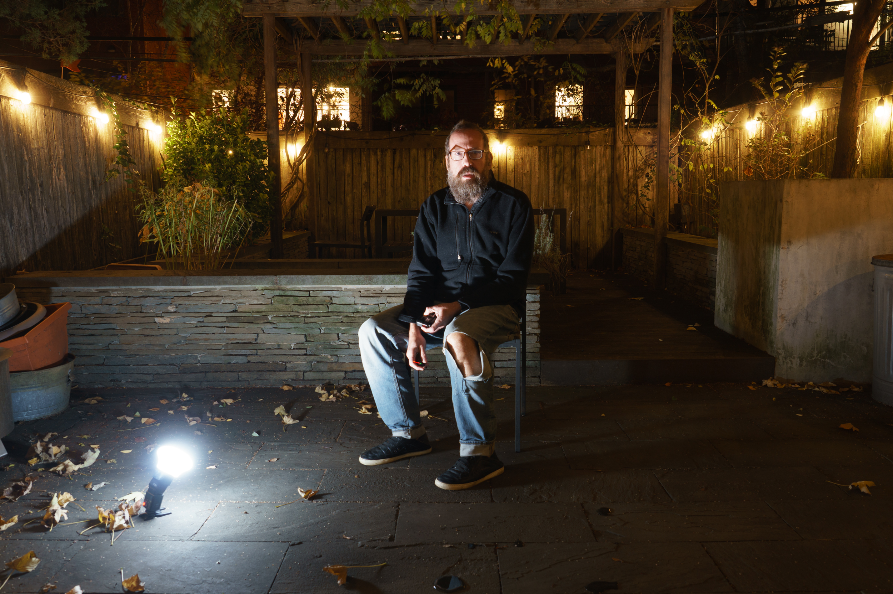

I am a late-in-life photographer.
For most of my professional life, I've worked as a designer in technology — photography is a relatively recent addition to my life, a way of engaging in a daily visual practice that allows me to explore ideas that live outside of my professional life.
My photographs have been featured in exhibitions by Arts Gowanus and the UDC Photo Gallery. My pictures have been published in The Provincetown Independent and Shots Magazine.
This site highlights a few of my active projects. If you'd like to talk about any of this, I'd love to hear from you.
I write a newsletter on Substack too. That might be of interest.
I used to have an Instagram, but I'm almost never there anymore.
I'm based in Brooklyn NY and Cape Cod MA.